Asphalt shingles are the most popular and common roofing material, and by far the most popular type of residential roofing product for sloped roofs—especially in Salt Lake City. These types of shingles are very economical and are available in a wide range of styles and colors, making it easy to request an asphalt shingle repair and replacement.
Request Free Quote!
Cost of Asphalt Shingles
Most asphalt shingles are made with a reinforced fiberglass mat covered with adhesive asphalt and ceramic granules. The cost of an asphalt shingle roof can vary considerably depending upon the style, durability, and warranty of the shingle. Premium asphalt shingles are usually heavier, will last longer, and are more wind resistant than less expensive asphalt shingles. Manufacturer’s warranties on asphalt shingles range from 20 years to lifetime material warranties. There’s a reason asphalt roofers are so common in Utah.
Asphalt Roof Benefits
Before hiring a local asphalt shingle roof contractor, it’s essential to know the many benefits of asphalt roof shingles. From their aesthetic and cost-effective perks to their practicality and endurance, asphalt shingles are the smart choice for roofing.
Benefits of Residential Asphalt Roofing
Homeowners love asphalt shingles for their ability to balance cost, functionality, and style. Here’s why residential asphalt roofing stands out:
- Affordability: There’s no reason to hide it; we all look to make the wisest financial choices, and asphalt shingles provide an affordable roofing option. With a quick Google search, it’s clear that asphalt shingles blow their competitors out of the water for affordability.
- Aesthetics: Who said you had to compromise on appearance when choosing a lower price? Asphalt shingles allow you to select from a wide variety of colors. Depending on your asphalt shingle roof contractor’s advice, you also have plenty of designs to choose from.
- Variety of Choice: Asphalt shingles come in an extensive range of colors, patterns, and textures, making it easy to request an asphalt shingle repair. Whether you prefer a traditional look or something modern, asphalt shingles offer the flexibility to customize.
- Affordability: Asphalt shingles provide a cost-effective solution without sacrificing quality. Their durability ensures homeowners get excellent value for their investment.
- Sound Dampening Capabilities: One underrated benefit of asphalt shingles is their ability to dampen outdoor noise. This feature creates a quieter and more comfortable home environment, especially in areas with frequent rainfall or wind.
Benefits of Commercial Asphalt Roofing
Businesses have unique roofing needs, and commercial asphalt roofing is designed to meet those demands effectively. Here’s how:
- Cost-Effectiveness: For large buildings with extensive roofing needs, asphalt shingles offer a budget-friendly solution. They are durable enough to withstand years of wear while keeping costs manageable for businesses.
- Ease of Installation: Asphalt shingles are quick and straightforward to install, minimizing downtime for commercial operations. This efficiency helps businesses resume their operations sooner.
- Fire Safety: Unlike wood shingles, asphalt shingles are fantastic for durability in a fire. Most asphalt shingles will last up to two hours before igniting, proving the value of asphalt shingles beyond the initial purchase.
- The Easy Option: Asphalt shingles make every roofing task easier than any other kind of shingle. This roofing choice requires minimal effort for maximum payoff from installation to maintenance and repairs.
- Aesthetic Appeal: With a wide variety of design options, commercial properties can maintain an attractive and professional appearance. Asphalt shingles can complement branding efforts by enhancing the building’s visual impact.
The list of benefits when purchasing an asphalt roof goes on and on, but the bottom line is that asphalt roofs are the biggest bang for your buck and a smart homeowner’s choice.
How Many Years Does an Asphalt Shingle Roof Last?
The overall lifespan of your roof depends on maintenance and climate, but most asphalt shingle roofs last about 20 years. If your roof needs a shingle replacement, contact American Roofing.
How Do I know if My Roof is Installed Properly?
There are many signs you can look for to know if your roof is installed properly. Signs that your shingles aren’t uniform include: leaks, black stains, or missing shingles. These are all indicators that your roof may have been poorly installed.
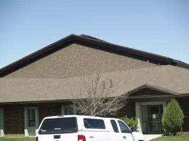
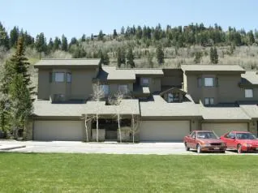
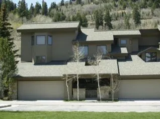
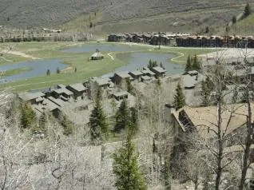
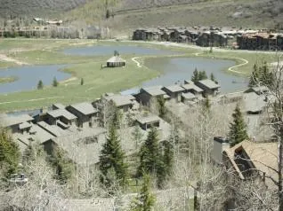
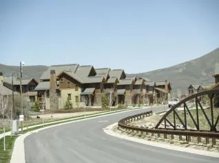
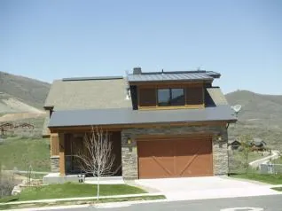
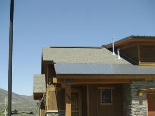
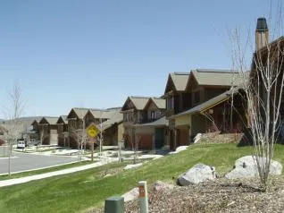
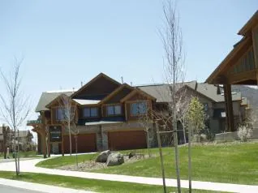
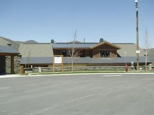
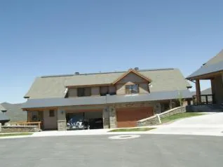
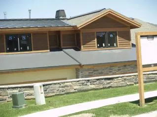
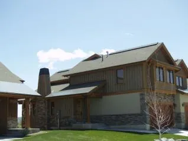
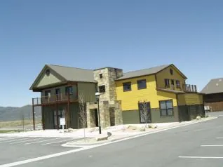
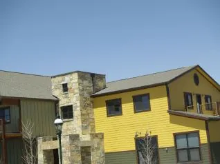
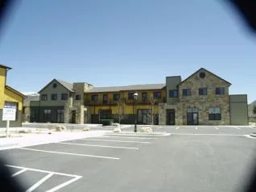
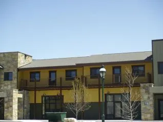

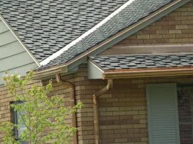
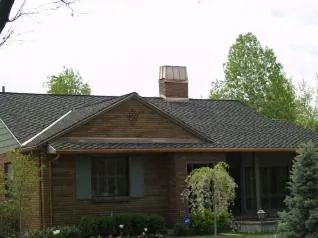
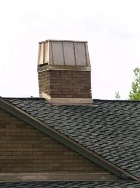
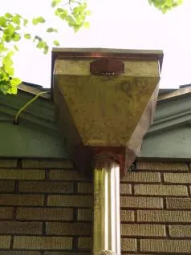

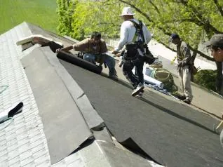
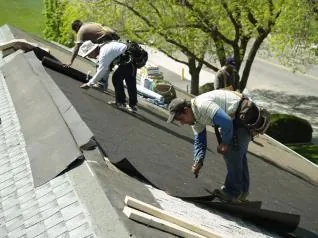
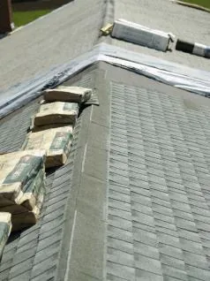
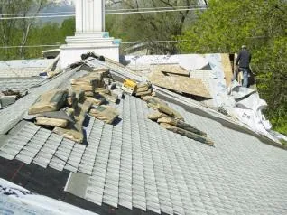
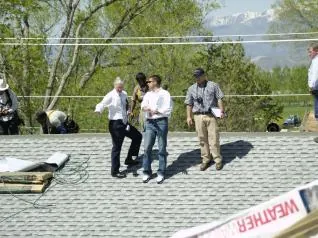
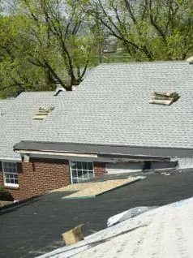
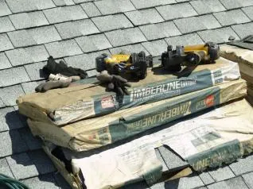

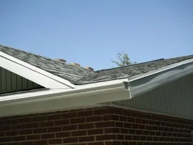
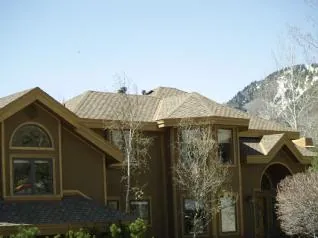
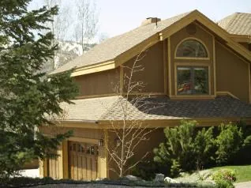
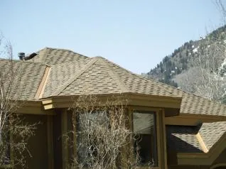
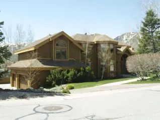
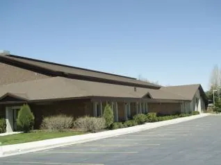
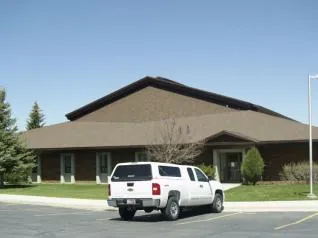